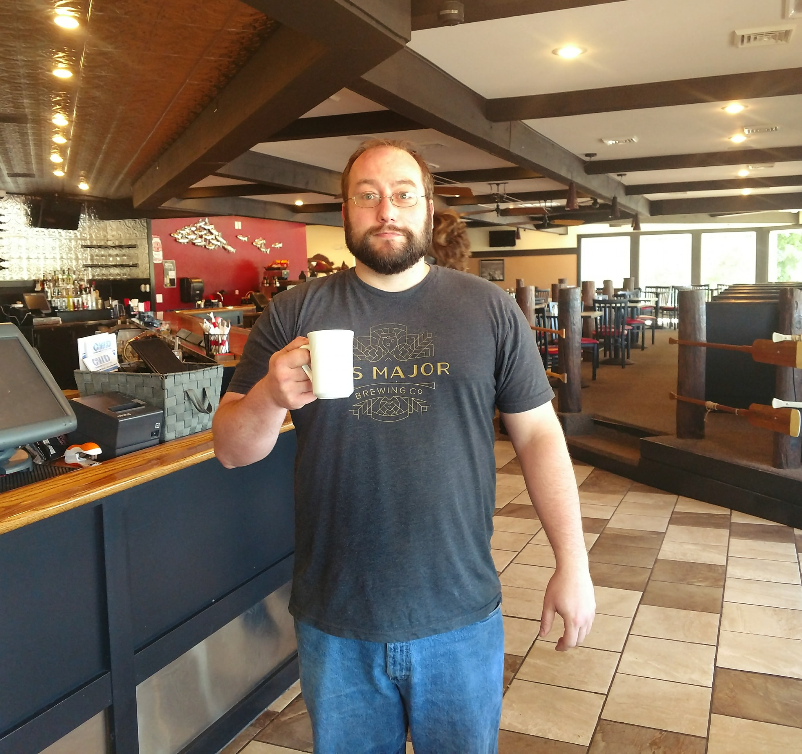
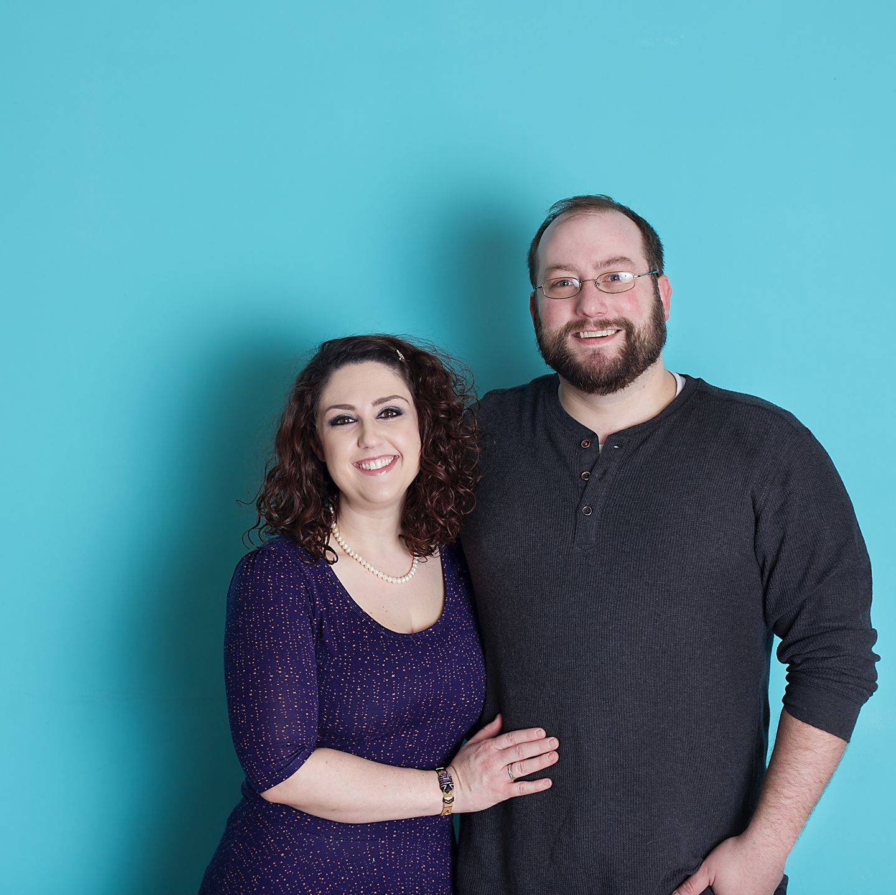
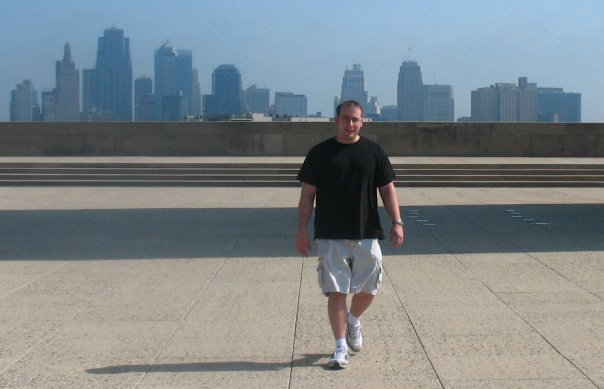
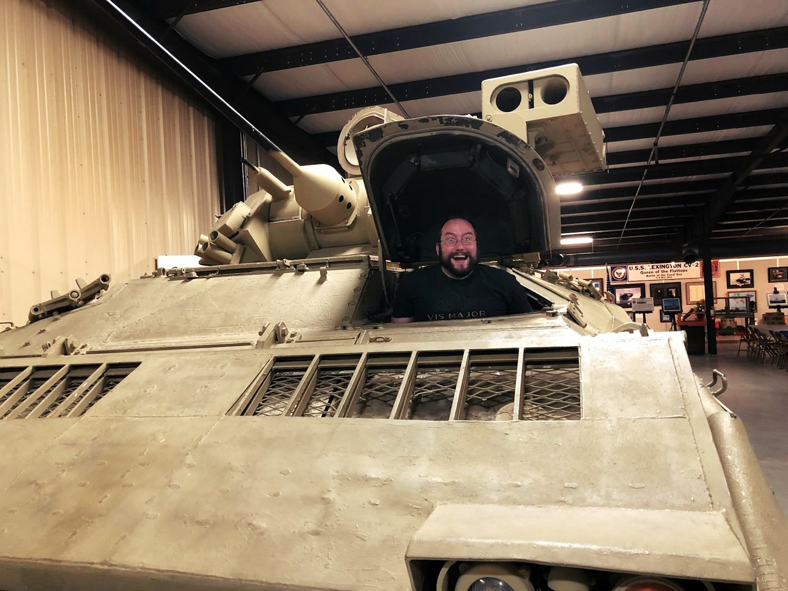
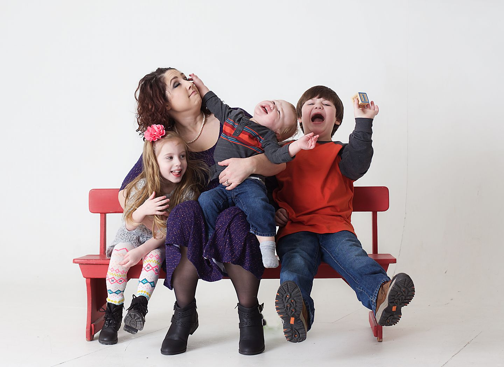

- Height: 5'8''
- Age: 36
- 215 lbs
- Bench: 370 lbs
- 120/80 BP
Jesse Carlberg
Senior Software Developer
Colleague
Friend
About Jesse
Our story begins on a cloudy Wednesday in January. Young Joanne Carlberg was being rushed to Methodist hospital after being pregnant for 37 weeks. The soon to be father of two, Eric was just happy Joanne’s mother was available to watch their four year old son, Zachary, as they rushed to the hospital. After parking sideways in a spot and running to the check-in desk they were greeted by their doctor, who looked exactly like Robert Redford but had an Eastern Slavic surname of Pushkin. A name that Eric routinely made quips about because he was a maternity ward doctor.
Jesse's vital stats
Jesse has amassed much mass in his time. Peaking at a bench of 370 lbs (2x his bodyweight at the time), he's a bundle of energy not to be underestimated. He's an quick-witted comical genious that will surprise and delight you every day (author's note).


Jesse's interests
I used to enjoy rock climbing, and was an instructor for a while but after having three kids, I
haven’t done this for a long time.
Cooking and baking. I make all the cupcakes for my wife’s work and decorate them. I take zero
credit because of the shame. The shame!
Jesse's History
I grew up in Omaha, Nebraska with my mother Joanne, my older brother Zach and my younger sister
Erica. My parents divorced when I was three and my father moved to Kansas City to work in the
hospitality industry. He would move several other places around the country over the years and
my siblings and I would visit him during summer breaks.
I attended Westside High School, graduating in 2012. During my senior year of high school I took
an EMT-B course at Methodist University and completed it shortly after graduating. I then took a
job as an EMT at Rural/Metro Ambulance, where my brother was also employed. While working there
I attended Paramedic school at Methodist and completed my clinical requirements on the job.
After two years with the ambulance company I went part time and took a full time position at
UNMC as Certified Cardiac Tech, where I would interpret EKC rhythms and report on them medical
staff.


Jesse's Goals
Raise three independent children. My older two have autism, so this is an ever changing goal
that usually equates to, raise three happy children.
I am a Buddhist so reaching enlightenment is always a goal but maybe just mindfulness and being
present is good enough.
Jesse's Family
Jackson is 10 and my oldest child. Everly is 7 and a handful. Maverick, the youngest at 4 has no super powers of autism and is a neurotypical child that likes to wrestle and use his punchers on bad guys. Sarah, my wife, is a nurse and is the opposite of me in every way, which balances out the children.
